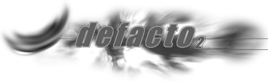
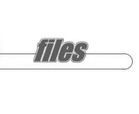
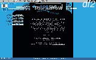
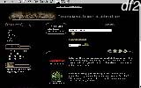
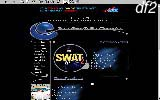

|  |  |
Defacto 2 Completed Web Pages (up until August 16th 1998)
Click on the capture to goto the webpage.
|
 |
 |
 |

Defacto 2 Art Pack Intro (released on the 1st May 1998)
This is our Windows95 friendly, DOS base continous intro for the Art Pack Number 2.
Download a copy by clicking here (97kb - ZIP file).

Defacto 2 Art Pack Number Two (released on the 1st May 1998)
Included are Svgas, Ansis and Asciis by both professional and amature artists.
Download a copy by clicking here (1.11megs - ZIP file).
Proficient 2.3 for mIRC 5.3 (released on the 28th March 1998)
This is a highly advanced yet easy to use mIRC script that has been around for over two years.
Download Proficient 2.3 (without mIRC execute) by clicking here (151kb - execute file).
Defacto 2 Art Pack Number One (released on the 10th January 1998)
Don't forget to unzip with the -d option.

the official mIRC script of Defacto 2.
This latest version of Proficient takes full advantage of mIRC 5.31. You won't see any kiddy
rubbish here, as we strive to make Proficient a professional project for the more mature irc users.
Download Proficient 2.3 (with mIRC execute) by clicking here (720kb - execute file).

Included are Svgas, Ansis and Asciis by both professional and amature artists.
Download a copy by clicking here (1.27megs - ZIP file).
Our very first artpack ever.
Download not fast enough? Try scenelink.org.